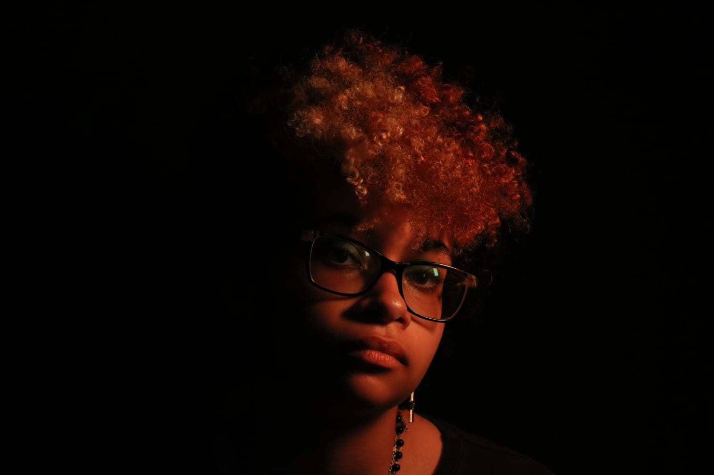

14 anos que gosto de fazer no meu tempo livre? Desenhar, pintar, fotografia e entre outras atividaldes criativas. Qual é minha música, filme, série ou jogo favorito? música: pop/rock/mpb;filme: Ponyosérie: Ordem Paranormal/House M.D.Jogo: Hollow Knight. Qual é uma qualidade minha? Eu me dedico ao máximo em projetos diversos, além de me adaptar facilmente a organizações, agendas e planos no geral.
O que eu sei fazer bem? Eu sou um bom ouvinte, consigo guardar informações importantes mesmo sem necessariamente anotar por escrito. O que gostaria de aprender A ser um profissional melhor, sendo muito jovem, eu adoraria aprender mais a como me comportar em ambientes de trabalho na prática. Qual é um objetivo que tenho para o futuro? Conseguir me aprimorar em áreas que eu possuo interesse, como na programação e no audiovisual. Como eu gostaria de ser lembrado pelas pessoas? Como uma pessoa que consegue ajudar as outras, tanto pessoalmente tanto profissionalmente.
